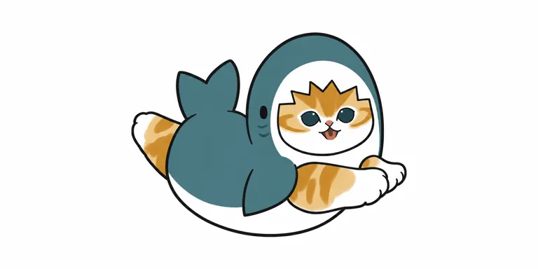

V03服侧大色块，仍有原笔触色差
V03 [2400, 1200] @ [1000, 680]STANDARD STUDY · 2026-10-29
mofusand 猫福珊迪
猫先让你熟悉，装扮再给你意外。
猫的可亲身体承接海洋、食物与装扮题材；插画、商品和动画角色关系分别核对，未将渠道热度或联名当销量。
查看真实平面测试 ↗
01 / 对象、权属与起源
- owner
- creator
- ぢゅの／Juno
- operator
- Spiralcute：角色/授权窗口；Gray Parka Service及多家厂商：商品
- relation
- 版权展示©mofusand；公开完整合同与财产权链null。不是三丽鸥、Dreams或名创优品的自有IP。厂商/销售渠道不等于原作权利人。
- origin
- path
- 网络插画
- 表情包传播
- year
- 未知 / null
- story
- 以SNS插画为起点，制造商2021公告已提LINE创作者贴纸。2017起源常见于二级介绍，本轮未核最初原创帖与首幅鲨鱼猫，创作/首次公开/首售分别留null；官方可证2021年8月景品已展开。
02 / 时间线
| 时间 | 事件 | 证据类型 | 来源ID |
|---|---|---|---|
| 2021-08 | 制造商回顾首次该批鲨鱼猫景品展开，非全IP最早商品已核 | self_report |
|
| 2022-01-28 | Kiddy Land五店POP UP官方记录 | fact |
|
| 2024-02-26 | 找不同纸书发售，电子版早4天 | fact |
|
| 2025-12-22 | 动画化公告 | fact |
|
| 2026-01-07 | 短篇动画计划开播 | self_report |
|
03 / 表达、用户与时代窗口
- expression
- line
- 日常已经够认真，猫可以替你荒诞一点。
- sentence_type
- 反差
- basis
- inferred
- core
- personality
- 插画总体可爱且略荒诞；动画鲨鱼猫笨拙、悠闲
- emotion
- 反差
- action
- 穿装扮、游泳、与朋友经历日常小插曲
- basis
- official
- insight
- scene
- 刷到一张猫图，或给桌面/包选择一只装扮猫
- behavior
- 按猫色、衣服和载体偏好选择，逐渐组成小收藏
- state
- 喜爱猫，但也想要新鲜题材与小意外
- conflict
- 动物服或食物可持续出题，但过度只换衣服可能让身份变弱
- unsaid
- 我喜欢的是这只猫的神态，不只是外面那层壳。
- basis
- inferred
- circle
- who
- 猫爱好者、插画/扭蛋/毛绒收藏者；年龄性别比例未知
- where
- SNS、官方店和授权商品渠道；日本线下与海外接触场景
- buy
- 实读用户自述逐渐购入扭蛋且关注价格，无凭证
- signs
- 大杏仁眼、小粉鼻、猫色条纹、厚实白口部与套装反差
- share
- 收藏合照、好价、辨款和陈列架讨论
- breakout
- 猫题材低门槛与衣装有联名接口；是否提高新客转化未核
- pendulum
- position
- 软萌治愈
- against
- 轻荒诞降低严肃叙事负担，猫不是近年才出现的需求，也不证明当日最高热度
- 组织
- 原作ぢゅの，授权窗口Spiralcute，GPS/EIKO/Dreams/Fukuya各自商品角色明确；联名不等于收购。
- 窗口
- SNS图像在景品、零售、书与动画形成多入口。2026开播是后续叙事扩展，不是其起源。
04 / 实际看图：身份、变体与载体
以下逐图观察只限实际可见角度。图像URL日期不作作品创作日期，产品照片不作标准三视图。
双爪朝前露粉肉垫，姜白脸大暗眼，外层鲨鱼小黑眼；金色边与蓝格是界面框。
已实际打开原图，描述仅限可见视角；框背景、主体、材质与摄影分开。
[s4]
灰白猫一眼闭起、草莓帽红色带绿叶，身体白/灰；不是全系列姜白猫。
已实际打开原图，描述仅限可见视角；框背景、主体、材质与摄影分开。
[s4]
蓝灰鲨鱼服弯曲躯体，尾在左上，猫前爪朝右伸，左后腿露姜白条纹；猫眼与鲨鱼眼两层。
已实际打开原图，描述仅限可见视角；框背景、主体、材质与摄影分开。
[s2]
坐姿，白腹、外层牙状头套边，姜白四肢与脚垫；猫眼为刺绣/印制式平面效果，具体工法不凭图认定。
已实际打开原图，描述仅限可见视角；框背景、主体、材质与摄影分开。
[s7]
前倾悬垂小四肢，蓝灰鲨鱼外衣与白胸，外衣小眼、鳃线可见；体态不是S坐姿缩小。
已实际打开原图，描述仅限可见视角；框背景、主体、材质与摄影分开。
[s9]- 外形五轴与头脸
- archetype
- 动物
- silhouette
- 拼接组合
- mark_position
- 五官
- 整体轮廓
- mark
- 软圆猫体、杏仁暗眼粉鼻与动物/食物套装形成内外双脸
- face
- V03略上挑杏仁大眼、暗蓝绿瞳小高光、粉三角鼻、嘴小而可开；头顶姜色尖纹，白口颊
- emotion
- 反差
- odd
- 柔软猫脸放在鲨鱼大口中，外层黑小眼和内层大猫眼并置
- density
- 中等
- naming
- 描述
- group
- 角色群
- 识别组合撞车边界
- 不要将蓝灰鲨鱼套装、大杏仁眼姜白猫脸、尖状额纹与游泳构图整套复制。猫和穿衣为公共题材，独立面部与装扮结构仍须重建。
- 跨图不变量与变量
- recurring
- 猫感、大杏仁眼、小鼻嘴与软体，常配轻荒诞装扮。
- variables
- 猫色、动作、装扮、题材、面料、动画人设；不是只有一个主角。
- unverified
- 历史全款通用脸比例、猫身份映射。
05 / 色彩与材料
- mode
- 多色系列
- main
- 姜白/灰白等猫色＋各主题外衣；本次鲨鱼服蓝灰
- signature
- 暖猫色与冷外衣反差，白脸/腹提供分区；非所有猫都是橘猫
- notes
- 原始水彩笔触、动画渲染与毛绒印花各异；不能将背景格纹/金边算角色颜色
V03前腿较平坦区
V03 [2400, 1200] @ [1510, 833]色值为原始图像取样的屏幕近似；背景、主角与材料分开，不是官方色卡。
鲨鱼猫S与拉动款为涤纶；双猫围巾增加腈纶。商品形体、缝线、面料毛向改变眼脸观感，非作者画错。纸书、CG动画与实物工艺不混用；姿势支撑疗效未测。06 / 代表产品与内容载体
| SKU/载体 | 发售/出版 | 价格·币种·地区 | 尺寸 | 材料/工艺 | 边界 | 来源ID |
|---|---|---|---|---|---|---|
| 鲨鱼猫S 4589468447344/GPS | 未知 / null | 日本JPY1980含税 | H270×W190×D255mm | 涤纶，中国制造 | 当前规格，不以图片文件日期补首售 |
|
| ぶるぶるず 4513750112290/EIKO | 未知 / null | 日本JPY1650含税 | H95×W70×D110mm/32g | 涤纶，拉动震动结构 | 拉鱿鱼产生动作，与抱持款不同 |
|
| ふんばるず 4542202428900/Dreams | 未知 / null | 日本JPY3850含税 | H260×W120×D210mm/300g | 涤纶 | 官方姿势支撑用途；非Dreams自有角色依据，不作医疗效果承诺 |
|
| 共享围巾双猫 4571609409663 | 未知 / null | 日本JPY3520含税 | H170×W220×D160mm | 涤纶、腈纶 | 鲨鱼猫与小猫相依；个体缝制差异 |
|
| 找不同书 ISBN9784065344736 | 纸2024-02-26/电子02-22 | 日本纸本JPY1210含税 | A5/64页 | 纸；电子载体另版 | ぢゅの著，讲谈社；观察力提升是出版宣传非实测 |
|
| Fukuya鲨鱼猫BIG/普通景品 | 2021-08展开；2022-01下旬再出 | 未知 / null | BIG约30cm/普通约15cm | 长毛绒生地，配方null | 游艺景品不是零售盲盒；抓取成本非统一定价 |
|
- primary
- 授权图案
- secondary
- 实物潮玩
07 / 用户证据、商业数字与反证
- source
- u1
- account
- 圆的IP自习室
- read_scope
- 1条标题/标签与可见2评论；09-10，用户图片0页完整
- finding
- 评论以店里不排队表达未感到热，作者回应收到。
- boundary
- 并非客流计数，不能当日本销售失败。
- source
- u2
- account
- 电磁波巡游
- read_scope
- 1条正文与当前可见评论；02-16，图片未逐页
- finding
- 自述陆续收藏，立体比插画更萌，期待好价；讨论选款、商场、展示架。
- boundary
- 自述购入未核订单，未做真伪鉴定。
| 指标 | 数值 | 单位 | 期间/主体 | 证据 | 来源ID |
|---|---|---|---|---|---|
| 独立IP营收/销量/复购/渠道贡献 | 未知 / null | 未知 / null | 截至2026-10-29 | hypothesis |
|
- 反例与替代解释
- 用户的好价诉求提示收藏有预算约束；单个不排队观察不能证伪或证明全国销售。官网同时出现售罄和加入购物车模板，未据此统计销量。毛绒厂商明确表情有个体差、与原画可不同。缺少系统退坑数据；“套装疲劳/类似猫拥挤”是待验证替代解释。
- 用户理论检查
- shell
- 猫是公共原型，辨识来自脸、笔触、装扮接口与反差
- core
- 可爱里有小荒诞，不需复杂知识即可进入
- shadow
- 外衣变化不能替代独立的内部身份
- two_layers
- surface
- 看到可爱猫的即时感受
- deep
- 题材分类、立体偏好、陈列与价格约束
- validation
- 制造商再发行自述只证明供给决定；不等于售出数量或全网热榜
08 / 机制：证据支持到哪一步
猫提供亲近感，装扮提供可连续扩展的题材。
- claim
- 猫提供亲近感，装扮提供可连续扩展的题材。
- type
- inference
- evidence
- 官方定义覆盖鲨鱼等略荒诞猫插画；草莓猫对照说明猫色、动作也会变。
- boundary
- 题材扩展证据强，商业增量未测；不把每套服都当同一位猫的换装。
跨载体让同一题材产生不同接触方式，而非只做缩放。
- claim
- 跨载体让同一题材产生不同接触方式，而非只做缩放。
- type
- inference
- evidence
- 毛绒抱持、拉动震动、支撑与找不同书提供不同参与动作；用户样本更喜欢扭蛋立体版。
- boundary
- 功能与偏好样本可核，但无留存/利润对比，也未证明支撑产品有医疗效果。
短动画为服装题材补日常关系，避免把“无剧情”永远冻结为IP定义。
- claim
- 短动画为服装题材补日常关系，避免把“无剧情”永远冻结为IP定义。
- type
- inference
- evidence
- 2026动画明确鲨鱼猫性格、朋友与被保护的小猫。
- boundary
- 这是动画版本的设定，不回填全部历史插画为同一连续剧情。
- 给lab/form/studio的有边界启发
- lab
- 让熟悉事物与意外处境发生关系，先检验真实共鸣，少依赖“治愈”标签。
- form
- 将身体识别与装扮变量分开，对比脱去外衣后是否仍能认出独立原创。
- studio
- 为载体设计不同参与动作，验证缝制、印花、拉动结构与实际触感；不把插画直接当工艺图。
09 / 真实平面提示词测试
以下为可见作品的研究重建，不是原作者提示词，也不证明原作由AI制作。附图、纯文字和语言结论严格分开。
英文附图v1依赖V03实际官方插画，通过该可见游泳姿态的平面接近测试。线更均匀、眼距/爪曲线及条纹有轻微差异；纯文字、中文与重复稳定性未测。
mf-flat-ref-v1 · ready（限定范围）

- language
- en
- input_mode
- reference_assisted
- target_scope
- V03姜白猫穿鲨鱼服游泳的可见三分之四角度平面插画
- observations
- 身份、内外双脸、尾在左上、前爪朝右、蓝灰服白腹与姜白条纹接近；线更匀、眼距及爪曲线稍异，仍有少量色阶。不是纯文字或全角色群复现证明。
Use the attached illustration as the only visual identity reference. Recreate the single visible orange-and-white tabby kitten wearing a dark muted teal shark suit as a clean flat 2D illustration on a white landscape canvas. Preserve the exact three-quarter swimming pose: head at upper right, rounded suit body sweeping down to lower left, upright two-lobed shark tail at upper left, one big side fin over the lower-left body, the kitten's striped rear leg visible on the far left and its two orange-and-white front paws stretched together toward the right. Preserve the round white cat face inside the shark's white oval mouth opening, pointed ginger forehead patches, short brown tabby stripes, large dark blue-green almond eyes with small white highlights, tiny salmon-pink triangle nose, and small open happy mouth with brown tongue. Retain the suit's small black oval shark eye left of the face, two short gill curves, dark teal back, white underside, and proportions from the reference. Keep the cat face distinct from the outer shark face; do not turn it into an actual hybrid shark animal. Use a slightly irregular dark contour and simplified flat ginger, cream-white, teal and dark-eye fills with only a few solid patches for tabby markings. Remove watercolor shine, gradients, texture and cast shadows. Preserve the silhouette and pose, not a generic sitting cat. Do not add new fins, extra limbs, accessories, lettering, copyright mark, logo or watermark. Show only this visible pose; do not invent the hidden rear view.下载原文
全部测试记录（含未通过版本）
mf-flat-ref-v1 / ready
- prompt_id
- mf-flat-ref-v1
- subject_id
- mofusand
- version
- 1
- target_scope
- V03姜白猫穿鲨鱼服游泳的可见三分之四角度平面插画
- carrier
- flat
- language
- en
- input_mode
- reference_assisted
- reference_image_ids
- V03
- generated_image_path
- assets/flat-ref-v1.webp
- prompt_file
- prompts/flat-ref-v1.txt
- status
- ready
- observations
- 身份、内外双脸、尾在左上、前爪朝右、蓝灰服白腹与姜白条纹接近；线更匀、眼距及爪曲线稍异，仍有少量色阶。不是纯文字或全角色群复现证明。
- revision_reason
- 首轮保留同一游泳目标，没有换成更易坐姿。
- tested_at
- 2026-10-29
- original_sha256
- 3be9e8b364eb74fdde250b1a0aac57d9b677114a63b268f24b25069f26e2cfa7
- display_sha256
- 8fa4f5987a53495d2e605d4f227fe2d7e3a500aa11eaf85c0ba539e1431c5e35
- display_size
- 768
- 384
- bytes
- 11498
- exact_prompt_sha256
- 881996cbcaeafd30051e84f5727bb24933328a2c6839d109150af46862bdc649
Use the attached illustration as the only visual identity reference. Recreate the single visible orange-and-white tabby kitten wearing a dark muted teal shark suit as a clean flat 2D illustration on a white landscape canvas. Preserve the exact three-quarter swimming pose: head at upper right, rounded suit body sweeping down to lower left, upright two-lobed shark tail at upper left, one big side fin over the lower-left body, the kitten's striped rear leg visible on the far left and its two orange-and-white front paws stretched together toward the right. Preserve the round white cat face inside the shark's white oval mouth opening, pointed ginger forehead patches, short brown tabby stripes, large dark blue-green almond eyes with small white highlights, tiny salmon-pink triangle nose, and small open happy mouth with brown tongue. Retain the suit's small black oval shark eye left of the face, two short gill curves, dark teal back, white underside, and proportions from the reference. Keep the cat face distinct from the outer shark face; do not turn it into an actual hybrid shark animal. Use a slightly irregular dark contour and simplified flat ginger, cream-white, teal and dark-eye fills with only a few solid patches for tabby markings. Remove watercolor shine, gradients, texture and cast shadows. Preserve the silhouette and pose, not a generic sitting cat. Do not add new fins, extra limbs, accessories, lettering, copyright mark, logo or watermark. Show only this visible pose; do not invent the hidden rear view.
10 / 缺口与研究档案
- 创作日、首公开、全IP首售未知；2017年仅二级线索未核原帖。
- 权利链合同、独立营收、销量与中国渠道贡献null。
- 小红书执行两个固定检索，实读2条可见文字/评论，用户图逐页实读0；追加退坑查询后读取超时，停止依赖该访问。
- 动画角色关系不自动回写早期全部插画；作者本人原始创作访谈未取得，11月2日讲座仅预告。
- 平面只英文附图V03该游泳角度接近；线更匀、猫爪/眼距与条纹有轻微差异。纯文字/中文/重复稳定性未测。
下游原创开发、3D与毛绒生成未执行；本研究不代表用户审美认可。
card.jsonsources.jsonvisual-index.jsonproducts.jsoncolor-system.jsonprompt-tests.jsonsearch-log.jsonresearch-notes.json
检索日志
- platform
- web
- queries
- mofusand ぢゅの 作者 2017 公式
- site.spiralcute.com mofusand ぢゅの
- mofusand author interview
- site.mofusand-mofumofu-market.jp サメにゃん ぬいぐるみ サイズ
- status
- executed
- platform
- 小红书站内
- queries
- mofusand 品牌介绍
- mofusand 产品汇总
- status
- executed
- read_notes
- 2
- scope
- 2条可见正文/评论，用户图片逐页0，非随机抽样
- platform
- 小红书站内
- queries
- mofusand 退坑
- status
- blocked
- scope
- 已提交检索，但后续页面读取长时间未返回；未读到结果，停止依赖该访问。
11 / 来源与访问边界
s1 · Spiralcute角色与原作署名
Spiralcute · 发布 None · 实读 full · 采集 2026-10-29
©mofusand；ぢゅの创作，SNS插画系列；代理展示不等于买断作者权利。
原始来源 ↗s2 · GPS角色介绍
Gray Parka Service · 发布 None · 实读 full · 采集 2026-10-29
猫穿鲨鱼服等可爱、略荒诞插画；GPS制作商品，不据此认定其创作全IP。
原始来源 ↗s3 · 官方综合信息与线下活动
Spiralcute · 发布 None · 实读 full · 采集 2026-10-29
2022-01-28起Kiddy Land五店；当前活动与三丽鸥联名为授权/联名关系。
原始来源 ↗s4 · 动画日文角色与制作署名
动画官网 · 发布 None · 实读 full · 采集 2026-10-29
茶虎猫穿鲨鱼服；笨拙悠闲，与朋友/被保护小猫の日常；原作、导演、制作分工明确。
原始来源 ↗s5 · 动画英文版本
动画官网 · 发布 None · 实读 full · 采集 2026-10-29
英文原作署名Juno，与日文ぢゅの对应，不另排IP。
原始来源 ↗s6 · 动画化与开播公告
动画官网 · 发布 2025-12-22 · 实读 full · 采集 2026-10-29
2025-12-22公告，2026-01-07起每周三08:00配信。
原始来源 ↗s7 · 鲨鱼猫S规格
官方商店 · 发布 None · 实读 full · 采集 2026-10-29
1980JPY含税，H270×W190×D255mm，涤纶；生产地中国，首售日null。
原始来源 ↗s8 · 拉动震动玩偶规格
官方商店 · 发布 None · 实读 full · 采集 2026-10-29
1650JPY含税，H95×W70×D110mm/32g，涤纶；拉鱿鱼会震动。
原始来源 ↗s9 · ふんばるず规格
官方商店 · 发布 None · 实读 full · 采集 2026-10-29
Dreams制造，3850JPY含税，H260×W120×D210mm/300g，涤纶；姿势支撑是官方用途并非临床疗效。
原始来源 ↗s10 · 共享围巾双猫规格
官方商店 · 发布 None · 实读 full · 采集 2026-10-29
3520JPY含税，H170×W220×D160mm，涤纶/腈纶；手工缝制表情可能不同。
原始来源 ↗s11 · 找不同纸书与作者介绍
讲谈社 · 发布 None · 实读 full · 采集 2026-10-29
纸2024-02-26、电子02-22；A5/64页，1210JPY含税；不是早于SNS的原著。
原始来源 ↗s12 · 2021景品与再发行公告
Fukuya · 发布 2021-12-27 · 实读 full · 采集 2026-10-29
2021-12-27公告回顾同年8月景品、2022年1月下旬再出；15/30cm，景品不填零售单价。
原始来源 ↗s13 · 动画制作讲座预告
VIDEO SALON · 发布 None · 实读 partial · 采集 2026-10-29
实读公开预告全文，11月2日未来付费活动；未观看未举行的讲座，不当作作者原始访谈全文。
原始来源 ↗u1 · 每天认识一个新IP Vol.1
圆的IP自习室 · 发布 None · 实读 partial · 采集 2026-10-29
显示09-10；图文正文只有标签，实读当前2条评论。有人以不排队表达未感到火，这只是个体观察。
原始来源 ↗u2 · 扭蛋收藏合影
电磁波巡游 · 发布 None · 实读 partial · 采集 2026-10-29
显示02-16；正文偏爱立体版、逐渐买入和期待好价；评论谈选款与展示架。未核订单、未逐张看全图。
原始来源 ↗